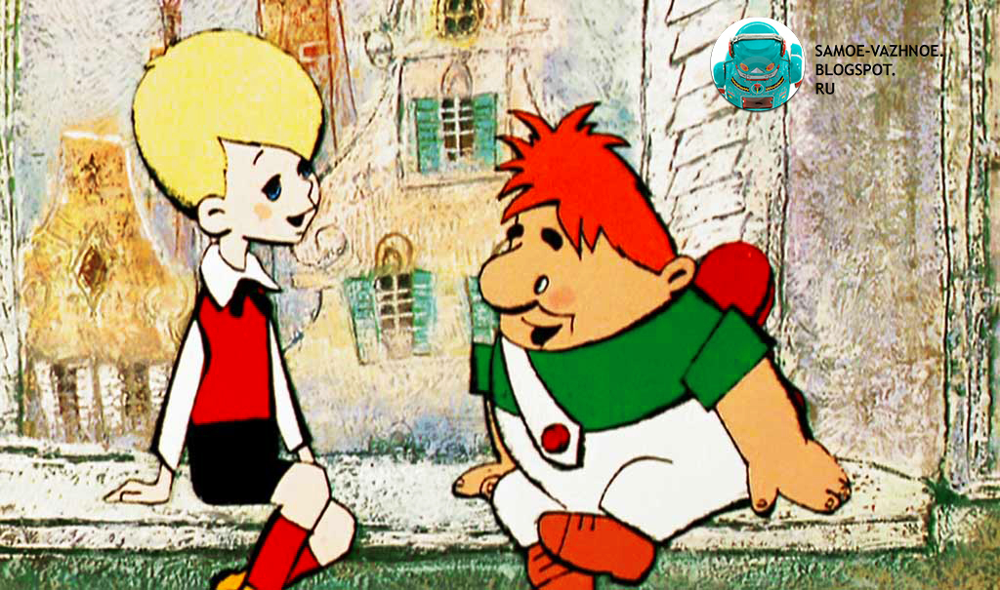

«Малыш и Карлсон» — советский рисованный мультипликационный фильм. Экранизация первой части одноимённой трилогии Астрид Линдгрен. Один из наиболее популярных мультфильмов режиссёра Бориса Степанцева[1]. Первое применение электрографии в советской мультипликации[2].
Мультфильм был выпущен в 1969 году. В 1970 вышла вторая часть — «Карлсон вернулся».

Кадр из мультфильма
О фильме
В одном из интервью с художником А. М. Савченко, постановщиком ряда мультипликационных фильмов Б. Степанцева, он рассказал о создании образа главного героя фильма:
Вопрос: Анатолий Михайлович, а кто придумал образ Карлсона?
Ответ: Карлсон целиком и полностью моё изобразительное решение. Передо мной был только текст и больше ничего. Как и во всех остальных случаях, я сделал раскадровку фильма, нарисовал персонажей, а потом сдал свою работу творческой группе. Её приняли и приступили к съёмкам. Художник всегда творит с пустого места, из ничего, работает только его фантазия. Именно от него зависит изобразительный ряд всего фильма. Но, к сожалению, в кино по именам знают только режиссёров и все удачи приписывают им одним. А ведь без художника мультипликации нет и не может быть.
Вопрос: А Ливанова на роль Карлсона кто нашёл?
Ответ: Случай. Здесь тоже пробовались многие, даже Алексей Грибов. А Вася Ливанов часто к нам в группу заходил, в шахматы играл. Борис ему пожаловался, что никак не получается найти главного героя, и вдруг Вася говорит: «Давай я попробую!» Пошли в студию, записали, и всем понравилось. Причём в роли Карлсона Ливанов пародировал знаменитого режиссёра Григория Рошаля. Экспромты всегда лучше, чем типажи, притянутые за уши.
Роли озвучивали
Клара Румянова — Малыш
Василий Ливанов — Карлсон / папа Малыша
Валентина Леонтьева — мама Малыша (в титрах не указана)
Мария Виноградова — мальчик-драчун, хозяин щенка (в титрах не указана)
Награды и признание
1970 — 1-я премия по разделу мультипликационных фильмов на IV ВКФ в Минске
Кадр из мультфильма изображён на почтовой марке России 2012 года
ФГУП Киностудия «Союзмультфильм»
Адрес: ул. Академика Королева, 21, стр. 1, Москва, Россия, 127427
Телефон: +7 495 308-00-32 Сайт: souzmult.ru